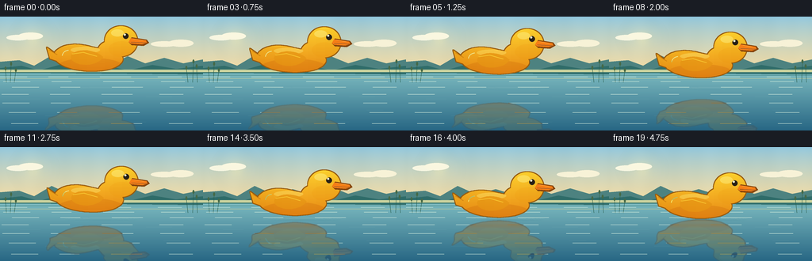
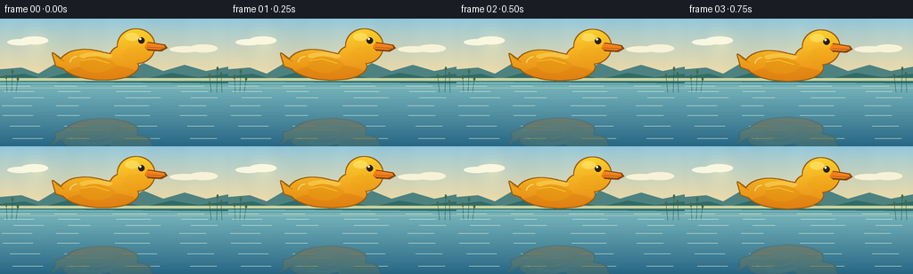

CODING AGENTS AS PIXEL WORLD MODELS
traex/GPT-5.6-Sol · phygen_065
点击播放 · 原生 RGB 像素
逐轮保存的候选
回放视频、检查图与代码变化。
每份候选均可单独播放。实际图片检查记录在下方工具轨迹中。
候选 01播放与检查图
点击播放 · 原生 RGB 像素


展开代码变化
--- 上一保存版本
+++ 本次保存版本
@@ -0,0 +1,242 @@
+from pathlib import Path
+import math
+import numpy as np
+from PIL import Image, ImageDraw, ImageFilter
+import artifact_io
+
+# Deterministic, supersampled procedural illustration.
+W, H, N = 256, 144, 20
+S = 4
+WW, HH = W*S, H*S
+WATER_AXIS = 91.0
+
+
+def spoints(points, dy=0.0):
+ return [(round(x*S), round((y+dy)*S)) for x, y in points]
+
+
+def bezier_path(start, segments, steps=18):
+ pts = [start]
+ p0 = np.array(start, dtype=float)
+ for c1, c2, end in segments:
+ c1, c2, p3 = map(lambda p: np.array(p, dtype=float), (c1, c2, end))
+ for j in range(1, steps+1):
+ t = j/steps
+ p = ((1-t)**3*p0 + 3*(1-t)**2*t*c1 + 3*(1-t)*t*t*c2 + t**3*p3)
+ pts.append(tuple(p))
+ p0 = p3
+ return pts
+
+
+def rgba_solid(color, alpha_mask):
+ arr = np.zeros((HH, WW, 4), np.uint8)
+ arr[..., :3] = color
+ arr[..., 3] = np.asarray(alpha_mask)
+ return Image.fromarray(arr, 'RGBA')
+
+
+def background():
+ yy = np.arange(HH)[:, None] / S
+ arr = np.empty((HH, WW, 3), dtype=np.float32)
+ # Luminous blue-gold sky.
+ horizon = 68*S
+ top = np.array([142, 198, 222], float)
+ low = np.array([244, 220, 164], float)
+ for y in range(horizon):
+ q = y / max(1, horizon-1)
+ q = q**0.78
+ arr[y, :, :] = top*(1-q) + low*q
+ # Calm water, brighter toward the distant horizon.
+ wat_top = np.array([126, 188, 193], float)
+ wat_bot = np.array([40, 103, 132], float)
+ for y in range(horizon, HH):
+ q = (y-horizon) / max(1, HH-horizon-1)
+ arr[y, :, :] = wat_top*(1-q) + wat_bot*q
+ # Very subtle horizontal atmospheric texture, deterministic.
+ x = np.arange(WW)[None, :]
+ haze = 1.7*np.sin(x/67.0) + 0.8*np.sin(x/19.0)
+ arr[:horizon] += haze[..., None]
+ img = Image.fromarray(np.clip(arr, 0, 255).astype(np.uint8), 'RGB').convert('RGBA')
+ d = ImageDraw.Draw(img, 'RGBA')
+
+ # Soft sun and haze bloom.
+ glow = Image.new('RGBA', (WW, HH), (0,0,0,0))
+ gd = ImageDraw.Draw(glow, 'RGBA')
+ for r, a in [(27,7),(20,10),(14,15),(9,28)]:
+ gd.ellipse(((42-r)*S, (28-r)*S, (42+r)*S, (28+r)*S), fill=(255,239,174,a))
+ gd.ellipse((35*S,21*S,49*S,35*S), fill=(255,241,177,115))
+ glow = glow.filter(ImageFilter.GaussianBlur(5*S))
+ img = Image.alpha_composite(img, glow)
+ d = ImageDraw.Draw(img, 'RGBA')
+
+ # Thin clouds; low contrast keeps attention on the duck.
+ d.ellipse((8*S,23*S,37*S,30*S), fill=(247,246,225,58))
+ d.ellipse((23*S,20*S,54*S,29*S), fill=(250,247,224,58))
+ d.ellipse((190*S,31*S,224*S,38*S), fill=(247,242,215,38))
+ d.ellipse((212*S,29*S,244*S,38*S), fill=(247,242,215,35))
+
+ # Layered far shore reflected in the water.
+ hills = [(0,67),(0,57),(24,55),(43,62),(65,49),(89,60),(113,53),
+ (139,61),(161,50),(183,59),(207,52),(231,59),(256,54),(256,70)]
+ d.polygon(spoints(hills), fill=(77,130,128,128))
+ back = [(0,71),(0,65),(27,62),(49,68),(78,60),(105,67),(134,62),
+ (162,68),(192,61),(222,66),(256,62),(256,73)]
+ d.polygon(spoints(back), fill=(47,108,105,170))
+ d.rectangle((0,67*S,WW,70*S), fill=(203,211,158,38))
+ # Far shoreline reflection streaks.
+ for y, alpha, col in [(71,36,(53,121,121)),(74,27,(65,132,132)),(78,18,(204,207,153))]:
+ d.rectangle((0,y*S,WW,(y+0.45)*S), fill=(*col,alpha))
+
+ # Sparse reeds at edges, framing the subject.
+ for x0, ht, lean in [(8,17,-1),(13,23,1),(18,15,2),(237,18,-2),(243,26,1),(249,20,-1)]:
+ d.line((x0*S,83*S,(x0+lean)*S,(83-ht)*S), fill=(39,91,75,170), width=max(2,S//2))
+ d.ellipse(((x0+lean-1.1)*S,(83-ht-3)*S,(x0+lean+1.1)*S,(83-ht+2)*S), fill=(69,105,70,120))
+
+ # Fine calm-water bands.
+ for y in [76,82,89,98,109,121,135]:
+ a = 20 if y < 100 else 13
+ for phase, length in [(0,34),(61,25),(126,39),(199,30)]:
+ xx = phase + (y*7)%19
+ d.line((xx*S,y*S,min(256,xx+length)*S,y*S), fill=(214,239,222,a), width=max(1,S//2))
+ return img
+
+
+def duck_layer(dy, xshift=0.0):
+ """A shaded side-view rubber duck, drawn as one joined silhouette."""
+ mask = Image.new('L', (WW, HH), 0)
+ m = ImageDraw.Draw(mask)
+ # Plump body curve.
+ body = bezier_path((70+xshift,44+dy), [
+ ((79+xshift,34+dy),(97+xshift,33+dy),(114+xshift,38+dy)),
+ ((128+xshift,41+dy),(137+xshift,42+dy),(151+xshift,48+dy)),
+ ((160+xshift,54+dy),(151+xshift,64+dy),(134+xshift,67+dy)),
+ ((112+xshift,71+dy),(86+xshift,67+dy),(75+xshift,59+dy)),
+ ((68+xshift,54+dy),(67+xshift,48+dy),(70+xshift,44+dy)),
+ ], 22)
+ m.polygon(spoints([(x,y-dy) for x,y in body], dy), fill=255)
+ # Tail, neck and round head are unioned before outlining.
+ m.polygon(spoints([(70+xshift,47),(59+xshift,39),(63+xshift,53),(75+xshift,57)],dy), fill=255)
+ m.ellipse(((123+xshift)*S,(31+dy)*S,(153+xshift)*S,(59+dy)*S), fill=255)
+ m.ellipse(((132+xshift)*S,(12+dy)*S,(173+xshift)*S,(50+dy)*S), fill=255)
+
+ # Warm narrow contour around a clean yellow silhouette.
+ stroke = mask.filter(ImageFilter.MaxFilter(2*S+1))
+ outline = np.maximum(np.asarray(stroke, dtype=np.int16)-np.asarray(mask, dtype=np.int16),0).astype(np.uint8)
+ layer = rgba_solid((151,91,16), Image.fromarray(outline))
+
+ # Vertical golden shading clipped to mask.
+ ma = np.asarray(mask, dtype=np.float32)/255
+ ygrid = np.arange(HH, dtype=np.float32)[:,None]/S - dy
+ xgrid = np.arange(WW, dtype=np.float32)[None,:]/S - xshift
+ shade = np.clip((ygrid-12)/60,0,1)
+ rgb = np.zeros((HH,WW,4),np.uint8)
+ rgb[...,0] = np.clip(255 - 22*shade,0,255)
+ rgb[...,1] = np.clip(210 - 76*shade,0,255)
+ rgb[...,2] = np.clip(48 - 27*shade,0,255)
+ # Gentle left-to-right modelling.
+ side = np.clip(np.abs(xgrid-121)/75,0,1)
+ rgb[...,:3] = np.clip(rgb[...,:3].astype(float) - side[...,None]*7,0,255).astype(np.uint8)
+ rgb[...,3] = (ma*255).astype(np.uint8)
+ layer = Image.alpha_composite(layer, Image.fromarray(rgb,'RGBA'))
+
+ details = Image.new('RGBA',(WW,HH),(0,0,0,0))
+ d = ImageDraw.Draw(details,'RGBA')
+ # Soft body underside and head blush, clipped afterward.
+ d.ellipse(((72+xshift)*S,(52+dy)*S,(156+xshift)*S,(75+dy)*S), fill=(205,108,10,80))
+ d.ellipse(((137+xshift)*S,(31+dy)*S,(170+xshift)*S,(51+dy)*S), fill=(237,151,12,45))
+ # Bright highlights convey glossy rubber.
+ d.ellipse(((89+xshift)*S,(38+dy)*S,(126+xshift)*S,(46+dy)*S), fill=(255,247,137,80))
+ d.ellipse(((140+xshift)*S,(16+dy)*S,(156+xshift)*S,(25+dy)*S), fill=(255,248,150,105))
+ # Wing with dimensional contour.
+ wing = bezier_path((91+xshift,47+dy),[
+ ((100+xshift,39+dy),(121+xshift,42+dy),(130+xshift,51+dy)),
+ ((124+xshift,61+dy),(104+xshift,64+dy),(93+xshift,57+dy)),
+ ((89+xshift,54+dy),(88+xshift,50+dy),(91+xshift,47+dy)),
+ ],14)
+ d.polygon(spoints([(x,y-dy) for x,y in wing],dy), fill=(224,142,14,125))
+ d.line(spoints([(91+xshift,47),(105+xshift,45),(122+xshift,50)],dy), fill=(255,226,66,145), width=S)
+ # Tiny tail crease.
+ d.line(spoints([(62+xshift,42),(72+xshift,48)],dy), fill=(185,103,8,120), width=S)
+ details.putalpha(Image.fromarray((np.asarray(details.getchannel('A'),dtype=np.float32)*ma).astype(np.uint8)))
+ layer = Image.alpha_composite(layer, details)
+
+ # Orange beak, separately outlined and highlighted.
+ bd = ImageDraw.Draw(layer,'RGBA')
+ beak = [(166+xshift,26),(185+xshift,29),(188+xshift,33),(181+xshift,37),(166+xshift,36),(162+xshift,32)]
+ bd.polygon(spoints(beak,dy), fill=(134,69,13,255))
+ inner = [(165+xshift,27),(184+xshift,30),(185+xshift,33),(179+xshift,35),(165+xshift,34),(162+xshift,32)]
+ bd.polygon(spoints(inner,dy), fill=(246,126,22,255))
+ bd.line(spoints([(165+xshift,32),(184+xshift,33)],dy), fill=(155,72,10,210), width=S)
+ bd.line(spoints([(168+xshift,28),(180+xshift,30)],dy), fill=(255,189,63,210), width=max(1,S//2))
+ # Eye and catchlight.
+ bd.ellipse(((155.0+xshift)*S,(21.0+dy)*S,(162.2+xshift)*S,(28.2+dy)*S), fill=(39,32,22,255))
+ bd.ellipse(((156.2+xshift)*S,(21.5+dy)*S,(158.7+xshift)*S,(24.0+dy)*S), fill=(255,252,210,255))
+ # Small specular dash on body.
+ bd.arc(((78+xshift)*S,(42+dy)*S,(96+xshift)*S,(58+dy)*S),185,265,fill=(255,241,108,135),width=S)
+ return layer
+
+
+def reflection_of(duck, frame_idx):
+ src = np.asarray(duck).copy()
+ out = np.zeros_like(src)
+ axis = int(round(WATER_AXIS*S))
+ # Exact vertical mirror motion, with slight scanline refraction.
+ for yd in range(axis, HH):
+ ys = 2*axis - yd - 1
+ if ys < 0 or ys >= HH:
+ continue
+ depth = (yd-axis)/S
+ amp = 0.35 + 0.018*depth # calm, not choppy
+ shift = int(round(S*amp*math.sin(0.46*depth + 0.10*frame_idx)))
+ row = np.roll(src[ys], shift, axis=0).astype(np.float32)
+ fade = max(0.12, 0.54*(1-depth/77.0))
+ ripple = 0.91 + 0.09*math.sin(depth*0.77 + frame_idx*0.08)
+ row[:,3] *= fade*ripple
+ # Cool the reflected yellow naturally without losing recognizability.
+ row[:,0] *= 0.70
+ row[:,1] *= 0.79
+ row[:,2] = np.minimum(255, row[:,2]*0.76 + 24)
+ out[yd] = np.clip(row,0,255)
+ im = Image.fromarray(out.astype(np.uint8),'RGBA')
+ return im.filter(ImageFilter.GaussianBlur(0.33*S))
+
+
+def water_accents(frame, proximity):
+ im = Image.new('RGBA',(WW,HH),(0,0,0,0))
+ d = ImageDraw.Draw(im,'RGBA')
+ # A restrained oval beneath the descending duck becomes clearer near contact.
+ a = int(13 + 24*proximity)
+ for k, (rx,ry) in enumerate([(47,2.0),(35,1.3),(24,0.8)]):
+ box = ((128-rx)*S,(WATER_AXIS-ry)*S,(128+rx)*S,(WATER_AXIS+ry)*S)
+ d.arc(box, 188, 350, fill=(224,245,222,max(4,a-5*k)), width=max(1,S//2))
+ d.arc(box, 8, 170, fill=(25,107,127,max(3,a-8-4*k)), width=max(1,S//2))
+ # Sparse, stationary calm highlights.
+ for x,y,l in [(25,104,26),(184,101,33),(57,125,42),(153,133,31),(206,118,21)]:
+ d.line((x*S,y*S,(x+l)*S,y*S),fill=(201,230,217,14),width=max(1,S//2))
+ return im
+
+
+def make_frames():
+ base = background()
+ frames=[]
+ for i in range(N):
+ t=i/(N-1)
+ ease=t*t*(3-2*t)
+ dy=21.0*ease
+ # A tiny lateral drift feels buoyant while preserving the monotone approach.
+ xshift=0.65*math.sin(math.pi*t)
+ duck=duck_layer(dy,xshift)
+ refl=reflection_of(duck,i)
+ frame=Image.alpha_composite(base,refl)
+ frame=Image.alpha_composite(frame,water_accents(i,ease))
+ frame=Image.alpha_composite(frame,duck)
+ frame=frame.convert('RGB').resize((W,H),Image.Resampling.LANCZOS)
+ frames.append(np.asarray(frame,dtype=np.uint8))
+ return np.stack(frames)
+
+
+if __name__ == '__main__':
+ frames=make_frames()
+ case_dir=Path(__file__).resolve().parent
+ artifact_io.save(frames,case_dir)
+ print(f'saved {frames.shape[0]} RGB frames at {frames.shape[2]}x{frames.shape[1]}')
可观测工具轨迹
实际执行的命令与返回图片。
命令 1exit 0
/bin/bash -lc "cat prompt.txt && printf '\\n--- GENERATION_RULES.md ---\\n' && cat GENERATION_RULES.md"
命令 2exit 0
/bin/bash -lc "cat task_spec.json && printf '\\n--- FILES ---\\n' && find . -maxdepth 2 -type f -printf '%p\\n' | sort"
命令 3exit 0
/bin/bash -lc "which ffmpeg || true; which blender || true; python3 - <<'PY' mods=['numpy','PIL','cv2','imageio','scipy'] for m in mods: try: x=__import__(m); print(m, getattr(x,'__version__','ok')) except Exception as e: print(m,'MISSING',e) PY"
命令 4exit 0
/bin/bash -lc "sed -n '1,260p' artifact_io.py"
命令 5exit 0
/bin/bash -lc "cat > generate.py <<'PY'
from pathlib import Path
import math
import numpy as np
from PIL import Image, ImageDraw, ImageFilter
import artifact_io
# Deterministic, supersampled procedural illustration.
W, H, N = 256, 144, 20
S = 4
WW, HH = W*S, H*S
WATER_AXIS = 91.0
def spoints(points, dy=0.0):
return [(round(x*S), round((y+dy)*S)) for x, y in points]
def bezier_path(start, segments, steps=18):
pts = [start]
p0 = np.array(start, dtype=float)
for c1, c2, end in segments:
c1, c2, p3 = map(lambda p: np.array(p, dtype=float), (c1, c2, end))
for j in range(1, steps+1):
t = j/steps
p = ((1-t)**3*p0 + 3*(1-t)**2*t*c1 + 3*(1-t)*t*t*c2 + t**3*p3)
pts.append(tuple(p))
p0 = p3
return pts
def rgba_solid(color, alpha_mask):
arr = np.zeros((HH, WW, 4), np.uint8)
arr[..., :3] = color
arr[..., 3] = np.asarray(alpha_mask)
return Image.fromarray(arr, 'RGBA')
def background():
yy = np.arange(HH)[:, None] / S
arr = np.empty((HH, WW, 3), dtype=np.float32)
# Luminous blue-gold sky.
horizon = 68*S
top = np.array([142, 198, 222], float)
low = np.array([244, 220, 164], float)
for y in range(horizon):
q = y / max(1, horizon-1)
q = q**0.78
arr[y, :, :] = top*(1-q) + low*q
# Calm water, brighter toward the distant horizon.
wat_top = np.array([126, 188, 193], float)
wat_bot = np.array([40, 103, 132], float)
for y in range(horizon, HH):
q = (y-horizon) / max(1, HH-horizon-1)
arr[y, :, :] = wat_top*(1-q) + wat_bot*q
# Very subtle horizontal atmospheric texture, deterministic.
x = np.arange(WW)[None, :]
haze = 1.7*np.sin(x/67.0) + 0.8*np.sin(x/19.0)
arr[:horizon] += haze[..., None]
img = Image.fromarray(np.clip(arr, 0, 255).astype(np.uint8), 'RGB').convert('RGBA')
d = ImageDraw.Draw(img, 'RGBA')
# Soft sun and haze bloom.
glow = Image.new('RGBA', (WW, HH), (0,0,0,0))
gd = ImageDraw.Draw(glow, 'RGBA')
for r, a in [(27,7),(20,10),(14,15),(9,28)]:
gd.ellipse(((42-r)*S, (28-r)*S, (42+r)*S, (28+r)*S), fill=(255,239,174,a))
gd.ellipse((35*S,21*S,49*S,35*S), fill=(255,241,177,115))
glow = glow.filter(ImageFilter.GaussianBlur(5*S))
img = Image.alpha_composite(img, glow)
d = ImageDraw.Draw(img, 'RGBA')
# Thin clouds; low contrast keeps attention on the duck.
d.ellipse((8*S,23*S,37*S,30*S), fill=(247,246,225,58))
d.ellipse((23*S,20*S,54*S,29*S), fill=(250,247,224,58))
d.ellipse((190*S,31*S,224*S,38*S), fill=(247,242,215,38))
d.ellipse((212*S,29*S,244*S,38*S), fill=(247,242,215,35))
# Layered far shore reflected in the water.
hills = [(0,67),(0,57),(24,55),(43,62),(65,49),(89,60),(113,53),
(139,61),(161,50),(183,59),(207,52),(231,59),(256,54),(256,70)]
d.polygon(spoints(hills), fill=(77,130,128,128))
back = [(0,71),(0,65),(27,62),(49,68),(78,60),(105,67),(134,62),
(162,68),(192,61),(222,66),(256,62),(256,73)]
d.polygon(spoints(back), fill=(47,108,105,170))
d.rectangle((0,67*S,WW,70*S), fill=(203,211,158,38))
# Far shoreline reflection streaks.
for y, alpha, col in [(71,36,(53,121,121)),(74,27,(65,132,132)),(78,18,(204,207,153))]:
d.rectangle((0,y*S,WW,(y+0.45)*S), fill=(*col,alpha))
# Sparse reeds at edges, framing the subject.
for x0, ht, lean in [(8,17,-1),(13,23,1),(18,15,2),(237,18,-2),(243,26,1),(249,20,-1)]:
d.line((x0*S,83*S,(x0+lean)*S,(83-ht)*S), fill=(39,91,75,170), width=max(2,S//2))
d.ellipse(((x0+lean-1.1)*S,(83-ht-3)*S,(x0+lean+1.1)*S,(83-ht+2)*S), fill=(69,105,70,120))
# Fine calm-water bands.
for y in [76,82,89,98,109,121,135]:
a = 20 if y < 100 else 13
for phase, length in [(0,34),(61,25),(126,39),(199,30)]:
xx = phase + (y*7)%19
d.line((xx*S,y*S,min(256,xx+length)*S,y*S), fill=(214,239,222,a), width=max(1,S//2))
return img
def duck_layer(dy, xshift=0.0):
\"\"\"A shaded side-view rubber duck, drawn as one joined silhouette.\"\"\"
mask = Image.new('L', (WW, HH), 0)
m = ImageDraw.Draw(mask)
# Plump body curve.
body = bezier_path((70+xshift,44+dy), [
((79+xshift,34+dy),(97+xshift,33+dy),(114+xshift,38+dy)),
((128+xshift,41+dy),(137+xshift,42+dy),(151+xshift,48+dy)),
((160+xshift,54+dy),(151+xshift,64+dy),(134+xshift,67+dy)),
((112+xshift,71+dy),(86+xshift,67+dy),(75+xshift,59+dy)),
((68+xshift,54+dy),(67+xshift,48+dy),(70+xshift,44+dy)),
], 22)
m.polygon(spoints([(x,y-dy) for x,y in body], dy), fill=255)
# Tail, neck and round head are unioned before outlining.
m.polygon(spoints([(70+xshift,47),(59+xshift,39),(63+xshift,53),(75+xshift,57)],dy), fill=255)
m.ellipse(((123+xshift)*S,(31+dy)*S,(153+xshift)*S,(59+dy)*S), fill=255)
m.ellipse(((132+xshift)*S,(12+dy)*S,(173+xshift)*S,(50+dy)*S), fill=255)
# Warm narrow contour around a clean yellow silhouette.
stroke = mask.filter(ImageFilter.MaxFilter(2*S+1))
outline = np.maximum(np.asarray(stroke, dtype=np.int16)-np.asarray(mask, dtype=np.int16),0).astype(np.uint8)
layer = rgba_solid((151,91,16), Image.fromarray(outline))
# Vertical golden shading clipped to mask.
ma = np.asarray(mask, dtype=np.float32)/255
ygrid = np.arange(HH, dtype=np.float32)[:,None]/S - dy
xgrid = np.arange(WW, dtype=np.float32)[None,:]/S - xshift
shade = np.clip((ygrid-12)/60,0,1)
rgb = np.zeros((HH,WW,4),np.uint8)
rgb[...,0] = np.clip(255 - 22*shade,0,255)
rgb[...,1] = np.clip(210 - 76*shade,0,255)
rgb[...,2] = np.clip(48 - 27*shade,0,255)
# Gentle left-to-right modelling.
side = np.clip(np.abs(xgrid-121)/75,0,1)
rgb[...,:3] = np.clip(rgb[...,:3].astype(float) - side[...,None]*7,0,255).astype(np.uint8)
rgb[...,3] = (ma*255).astype(np.uint8)
layer = Image.alpha_composite(layer, Image.fromarray(rgb,'RGBA'))
details = Image.new('RGBA',(WW,HH),(0,0,0,0))
d = ImageDraw.Draw(details,'RGBA')
# Soft body underside and head blush, clipped afterward.
d.ellipse(((72+xshift)*S,(52+dy)*S,(156+xshift)*S,(75+dy)*S), fill=(205,108,10,80))
d.ellipse(((137+xshift)*S,(31+dy)*S,(170+xshift)*S,(51+dy)*S), fill=(237,151,12,45))
# Bright highlights convey glossy rubber.
d.ellipse(((89+xshift)*S,(38+dy)*S,(126+xshift)*S,(46+dy)*S), fill=(255,247,137,80))
d.ellipse(((140+xshift)*S,(16+dy)*S,(156+xshift)*S,(25+dy)*S), fill=(255,248,150,105))
# Wing with dimensional contour.
wing = bezier_path((91+xshift,47+dy),[
((100+xshift,39+dy),(121+xshift,42+dy),(130+xshift,51+dy)),
((124+xshift,61+dy),(104+xshift,64+dy),(93+xshift,57+dy)),
((89+xshift,54+dy),(88+xshift,50+dy),(91+xshift,47+dy)),
],14)
d.polygon(spoints([(x,y-dy) for x,y in wing],dy), fill=(224,142,14,125))
d.line(spoints([(91+xshift,47),(105+xshift,45),(122+xshift,50)],dy), fill=(255,226,66,145), width=S)
# Tiny tail crease.
d.line(spoints([(62+xshift,42),(72+xshift,48)],dy), fill=(185,103,8,120), width=S)
details.putalpha(Image.fromarray((np.asarray(details.getchannel('A'),dtype=np.float32)*ma).astype(np.uint8)))
layer = Image.alpha_composite(layer, details)
# Orange beak, separately outlined and highlighted.
bd = ImageDraw.Draw(layer,'RGBA')
beak = [(166+xshift,26),(185+xshift,29),(188+xshift,33),(181+xshift,37),(166+xshift,36),(162+xshift,32)]
bd.polygon(spoints(beak,dy), fill=(134,69,13,255))
inner = [(165+xshift,27),(184+xshift,30),(185+xshift,33),(179+xshift,35),(165+xshift,34),(162+xshift,32)]
bd.polygon(spoints(inner,dy), fill=(246,126,22,255))
bd.line(spoints([(165+xshift,32),(184+xshift,33)],dy), fill=(155,72,10,210), width=S)
bd.line(spoints([(168+xshift,28),(180+xshift,30)],dy), fill=(255,189,63,210), width=max(1,S//2))
# Eye and catchlight.
bd.ellipse(((155.0+xshift)*S,(21.0+dy)*S,(162.2+xshift)*S,(28.2+dy)*S), fill=(39,32,22,255))
bd.ellipse(((156.2+xshift)*S,(21.5+dy)*S,(158.7+xshift)*S,(24.0+dy)*S), fill=(255,252,210,255))
# Small specular dash on body.
bd.arc(((78+xshift)*S,(42+dy)*S,(96+xshift)*S,(58+dy)*S),185,265,fill=(255,241,108,135),width=S)
return layer
def reflection_of(duck, frame_idx):
src = np.asarray(duck).copy()
out = np.zeros_like(src)
axis = int(round(WATER_AXIS*S))
# Exact vertical mirror motion, with slight scanline refraction.
for yd in range(axis, HH):
ys = 2*axis - yd - 1
if ys < 0 or ys >= HH:
continue
depth = (yd-axis)/S
amp = 0.35 + 0.018*depth # calm, not choppy
shift = int(round(S*amp*math.sin(0.46*depth + 0.10*frame_idx)))
row = np.roll(src[ys], shift, axis=0).astype(np.float32)
fade = max(0.12, 0.54*(1-depth/77.0))
ripple = 0.91 + 0.09*math.sin(depth*0.77 + frame_idx*0.08)
row[:,3] *= fade*ripple
# Cool the reflected yellow naturally without losing recognizability.
row[:,0] *= 0.70
row[:,1] *= 0.79
row[:,2] = np.minimum(255, row[:,2]*0.76 + 24)
out[yd] = np.clip(row,0,255)
im = Image.fromarray(out.astype(np.uint8),'RGBA')
return im.filter(ImageFilter.GaussianBlur(0.33*S))
def water_accents(frame, proximity):
im = Image.new('RGBA',(WW,HH),(0,0,0,0))
d = ImageDraw.Draw(im,'RGBA')
# A restrained oval beneath the descending duck becomes clearer near contact.
a = int(13 + 24*proximity)
for k, (rx,ry) in enumerate([(47,2.0),(35,1.3),(24,0.8)]):
box = ((128-rx)*S,(WATER_AXIS-ry)*S,(128+rx)*S,(WATER_AXIS+ry)*S)
d.arc(box, 188, 350, fill=(224,245,222,max(4,a-5*k)), width=max(1,S//2))
d.arc(box, 8, 170, fill=(25,107,127,max(3,a-8-4*k)), width=max(1,S//2))
# Sparse, stationary calm highlights.
for x,y,l in [(25,104,26),(184,101,33),(57,125,42),(153,133,31),(206,118,21)]:
d.line((x*S,y*S,(x+l)*S,y*S),fill=(201,230,217,14),width=max(1,S//2))
return im
def make_frames():
base = background()
frames=[]
for i in range(N):
t=i/(N-1)
ease=t*t*(3-2*t)
dy=21.0*ease
# A tiny lateral drift feels buoyant while preserving the monotone approach.
xshift=0.65*math.sin(math.pi*t)
duck=duck_layer(dy,xshift)
refl=reflection_of(duck,i)
frame=Image.alpha_composite(base,refl)
frame=Image.alpha_composite(frame,water_accents(i,ease))
frame=Image.alpha_composite(frame,duck)
frame=frame.convert('RGB').resize((W,H),Image.Resampling.LANCZOS)
frames.append(np.asarray(frame,dtype=np.uint8))
return np.stack(frames)
if __name__ == '__main__':
frames=make_frames()
case_dir=Path(__file__).resolve().parent
artifact_io.save(frames,case_dir)
print(f'saved {frames.shape[0]} RGB frames at {frames.shape[2]}x{frames.shape[1]}')
PY
python3 generate.py"命令 6exit 0
/bin/bash -lc "python3 - <<'PY'
from PIL import Image
import numpy as np, json
from pathlib import Path
p=Path('.')
s=json.loads(Path('task_spec.json').read_text())
files=sorted((p/'frames').glob('*.png'))
print('frame_count',len(files))
a=np.stack([np.asarray(Image.open(x).convert('RGB')) for x in files])
print('shape_dtype',a.shape,a.dtype,'range',a.min(),a.max())
print('npz',np.load('pixels.npz')['pixels'].shape)
print('index_bytes',Path('index.html').stat().st_size)
# yellow/orange subject mask above axis and colored reflection below it
for i in [0,1,2,5,8,11,14,17,19]:
f=a[i]
yy,xx=np.indices(f.shape[:2])
m=(f[:,:,0]>185)&(f[:,:,1]>105)&(f[:,:,0]>f[:,:,2]*1.7)&(yy<91)
mr=(f[:,:,0]>80)&(f[:,:,0]>f[:,:,2]*1.15)&(f[:,:,1]>f[:,:,2]*1.15)&(yy>=91)&(xx>45)&(xx<200)
cy=(yy[m].mean() if m.any() else -1); cr=(yy[mr].mean() if mr.any() else -1)
print(i,'duck_y',round(cy,2),'gap',round(91-cy,2),'reflect_y',round(cr,2),'refl_gap',round(cr-91,2),'subject_px',m.sum())
# Mean and max consecutive pixel change; confirms animation isn't static or erratic.
d=np.abs(a[1:].astype(np.int16)-a[:-1].astype(np.int16))
print('frame_delta_mean',np.round(d.mean((1,2,3)),3).tolist())
print('all_finite',np.isfinite(a).all())
PY"命令 7exit 0
/bin/bash -lc 'ls -lh generate.py pixels.npz index.html inspection.png transition_check.png frames/00.png frames/19.png; git status --short 2>/dev/null || true; which chafa || which viu || true'
保存候选 1 份；完成命令 7 次；可验证图片返回 0 张。原始 API 响应与完整日志保留在本地。